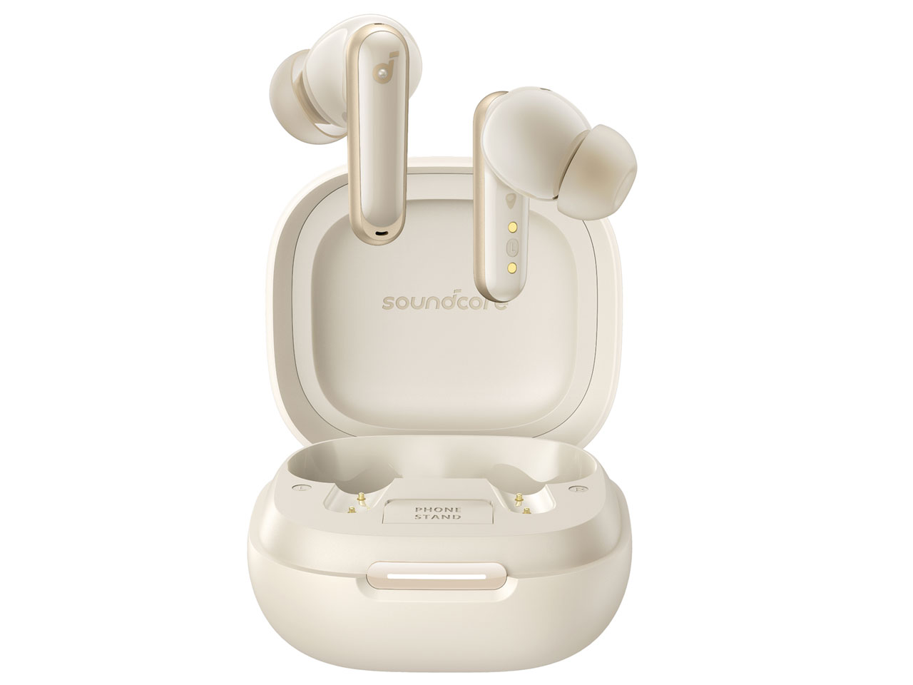
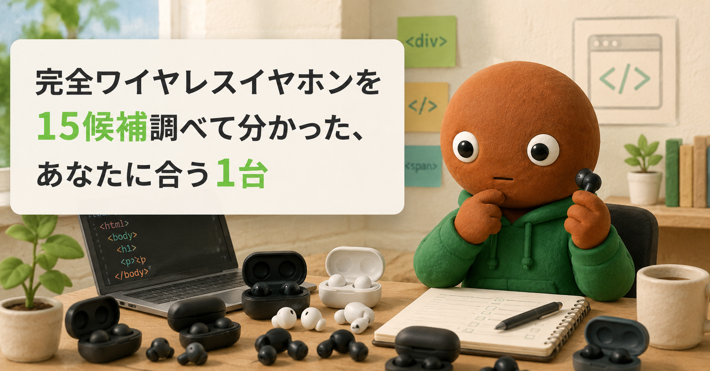
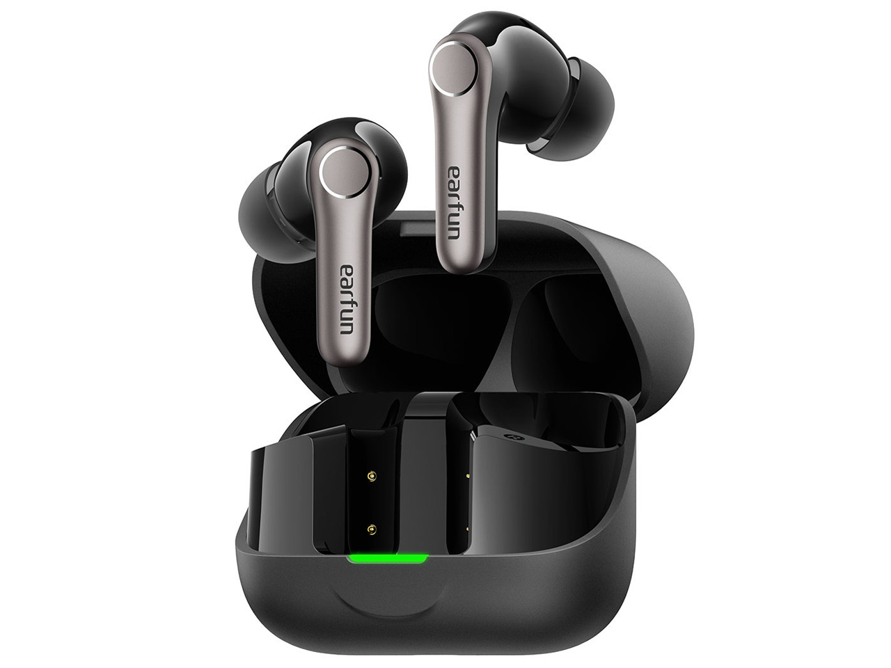
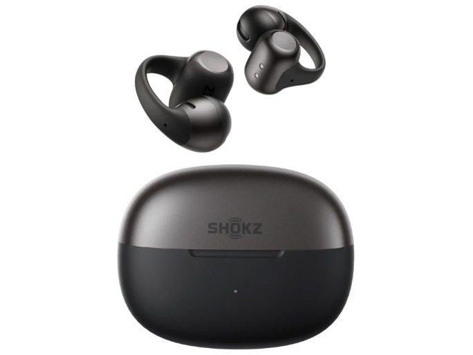
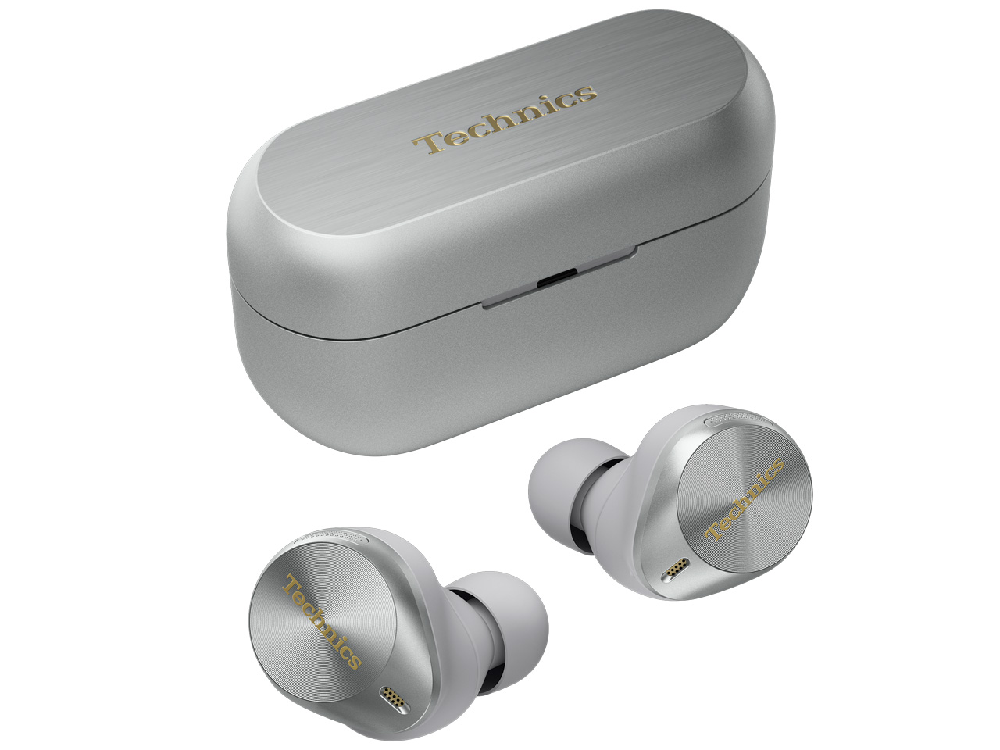
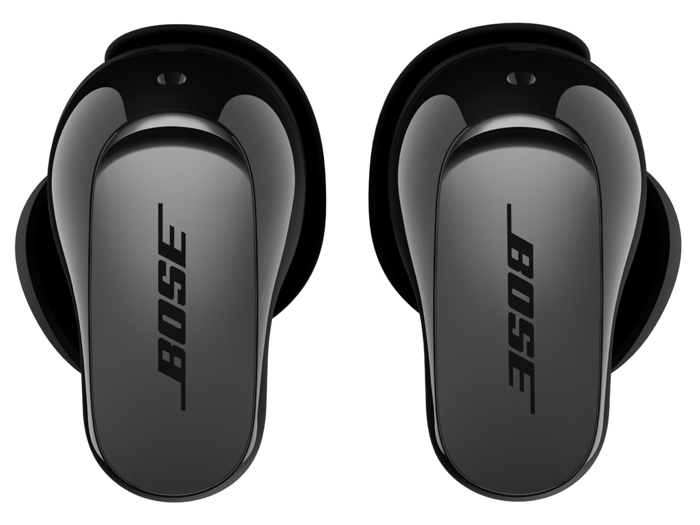
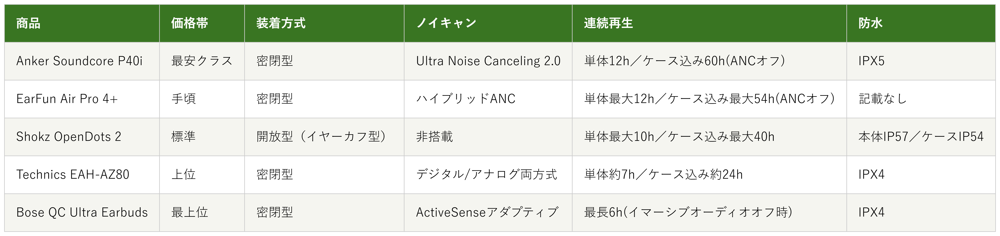

Amazonで見る通勤中や作業中に音楽・動画を楽しみたいだけなのに、イヤホン選びで迷っている人へ
完全ワイヤレスイヤホン15候補を調査。装着方式・ノイズキャンセリングの有無から、選び方の違う5商品を比較しました。
自分に合う完全ワイヤレスイヤホンを探す
この記事はAmazonアソシエイト・プログラムの参加者として、紹介料を得る場合があります（PR）。仕様は調査時点の情報です。
15候補から、選び方の違う5商品に絞りました。まずは気になる1台へ。向いている人・向いていない人と、低評価レビューもまとめています。
あなたの使い方に合う、1台を。

Amazonで見る
Amazonで見る
Amazonで見る
Amazonで見る
Amazonで見る横にスワイプして、5商品を見比べる
調べてわかったのは、基準はシンプルでした。
1つ目は「装着方式」。耳をふさぐ密閉型か、ふさがない開放型かで、圧迫感や周囲の音の聞こえ方が変わります。
2つ目は「ノイズキャンセリングの有無・強さ」。騒音を強力に遮断したいか、自然な聞こえ方を優先したいかで、向いてるタイプが変わります。
価格帯には、かなり幅がありました。

価格帯・装着方式・ノイズキャンセリング・連続再生時間・防水の比較（価格帯は最安クラス〜最上位の5段階）
選ぶ決め手とにかく安さを重視するなら、この1台です。
参考：レビューまとめサイトを基にした集約
完全ワイヤレスイヤホン
Soundcore P40iは、
5商品で一番手頃です。
Anker公式価格は7,990円。
独自の「Ultra Noise
Canceling 2.0」を搭載しています。
イヤホン単体で最大12時間（ANCオフ）、
充電ケース込みで最大60時間（ANCオフ）
使えます。
防水規格はIPX5、
Bluetooth 5.3のマルチポイント接続にも
対応しています。
選ぶ決め手バッテリー持ちを重視するなら、この1台です。
参考：メーカー公式情報を基にした集約
EarFunのAir Pro 4+は、
5商品の中で最長の
バッテリー性能を持つモデルです。
イヤホン単体で最大12時間（ANCオフ時）、
充電ケース込みで最大54時間
使えます。
aptX LosslessとLDACの両方に対応し、
ハイブリッドANCも搭載しています。
通常価格は13,990円です。
選ぶ決め手装着感を重視するなら、この1台です。
参考：実測レビューを基にした集約
ShokzのOpenDots 2は、
耳を塞がないイヤーカフ型の
開放型イヤホンです。
左右の区別なく、
自動で耳に馴染む設計になっていて、
Dolby Audioにも対応しています。
連続再生時間はイヤホン単体で最大10時間、
充電ケース込みで最大40時間です。
防水規格はイヤホン本体IP57、充電ケースIP54です。
選ぶ決め手音質を重視するなら、この1台です。
Technics（パナソニック）の
EAH-AZ80は、
LDAC・SBC・AACの3コーデックに対応しています。
10mmドライバーと、
デジタル/アナログ両方式を組み合わせた
ノイズキャンセリングを搭載。
ノイキャンオン・AAC接続時、
イヤホン単体で約7時間、
充電ケース込みで約24時間使えます。
防水はIPX4、重さはイヤホン片側約7gです。
価格.comの満足度は4.56（138件）と、
高い評価でした。
選ぶ決め手ノイキャンを重視するなら、この1台です。
Bose QuietComfort
Ultra Earbuds 第2世代は、
「ボーズ史上最高クラス」と謳われる
ノイズキャンセリング性能が特徴です。
改良されたActiveSenseアダプティブ
ノイズキャンセリングと、
映画館のような没入感を再現する
イマーシブオーディオのシネマモードを
搭載しています。
連続再生時間は最長6時間
（イマーシブオーディオオフ時）、
防水規格はIPX4です。
通勤中や作業中に、音楽や動画を楽しみたいだけなのに、イヤホン選びで迷っていませんか。
完全ワイヤレスイヤホンは種類が多すぎて、正直迷います。ノイズキャンセリングの強さ、音質、装着感、バッテリー持ちと、比べる軸も多いです。なので今回、音楽・動画鑑賞用としてスペックを調べ比較しました（Web会議用マイク付きヘッドセットとは別カテゴリです）。
各商品ごとに、向いてる人・向いてない人も調べているので、自分に合った完全ワイヤレスイヤホンを探してみてください。
今回、価格.comのワイヤレスイヤホン・Bluetoothイヤホン満足度ランキングと売れ筋ランキング、マイベストのおすすめランキングを使って調査しました。
Anker3機種・Apple1機種・Sony2機種・Technics2機種・Bose2機種・Shokz2機種・EarFun1機種・Nothing1機種・ゼンハイザー1機種、という15候補です。
この中から、5つに絞りました。
Anker SoundcoreのLiberty 5は、採用したP40iと同じAnkerブランドで、価格帯・再生時間の役割が重複するため見送りました。同じくAnkerのP31iも、P40iと近い価格帯・役割のため見送りました。
AppleのAirPods Pro 3は、満足度・売れ筋の両方で上位でしたが、価格帯がBoseのQuietComfort Ultra Earbudsと重なるうえ、一部機能がiPhone中心の設計のため、汎用性を重視する今回は見送りました。
SONYのWF-1000XM6は、売れ筋上位でしたが、音質面はTechnics、ノイキャン面はBoseと役割が重複するため見送りました。同じくSONYのWF-C710Nは、価格帯がP40iとEAH-AZ80の中間にあり、両者と役割が重複するため見送りました。
TechnicsのEAH-AZ100は、採用したEAH-AZ80の上位モデルで、同ブランド内での役割重複のため見送りました。
BoseのUltra Open Earbudsは、開放型という点でShokz OpenDots 2と役割が重複するため見送りました。ShokzのOpenFit 2+も、採用したOpenDots 2と同じ開放型で、役割が重複するため見送りました。
NothingのEar (a)は、満足度ランキングには入っていましたが、レビュー件数が5件と少なく、判断材料が薄いため見送りました。
ゼンハイザーのGLASS Core ProKH-CRZ100Tは、価格が5万円近く、今回の5商品の価格帯を大きく超えるため見送りました。
上の15候補とは別に、サクラチェッカーが「要注意」と判定した商品を3つ調べました。
個別レビュー本文の真偽までは検証できないため、機械的に検出された事実だけを正直に書きます。
delicocoのワイヤレスイヤホンは、レビュー件数175件で、「要注意メーカー」「本社所在国：推定中国」という指摘を受けていました。
FUSHOのワイヤレスイヤホンは、「評価数が1,004件減少」という記録があり、Amazonがサクラ評価を削除した可能性が示唆されていました。
SPOZGOのワイヤレスイヤホンは、レビュー件数50件で、カテゴリ平均640件を大きく下回っていました。「相場より9,465円安い」「公式サイト無し」「本社所在国：推定中国」とも書かれていました。
サクラチェッカー自身は、イヤホンカテゴリ全体でサクラ商品が61%を占める「危険な領域」だと述べていました。信頼できるメーカー例としてソニー・オーディオテクニカ・JVCなどを挙げていましたが、今回採用した5社（Anker・Technics・Bose・Shokz・EarFun）とは完全には一致しませんでした。ただし5社とも、公式サイトやカスタマーサポート体制が明確な大手・準大手メーカーである点は共通していました。
15候補以上を比較しました。一番驚いたのは、マイベストの満足度ランキングで1位だったOPPO Enco Air2 Proが、レビュー件数わずか5件だったことでした。
満足度の数字だけでは、母数の少なさまでは見えないと実感しました。
もう1つの発見は、「開放型（オープンイヤー）」というカテゴリの存在感でした。耳をふさがずに装着するタイプが、ShokzだけでなくBoseからも出ていて、ノイキャン一辺倒ではないと分かりました。
ここまで読んでもまだ迷ったら、5商品で一番手頃なのにノイズキャンセリングも備えたAnker Soundcore P40iが最初の1台におすすめです。
価格を抑えつつノイキャンもバッテリー持ちも両立しているので、外しにくい選択です。
Amazonで見る→Q. 完全ワイヤレスイヤホンは何を基準に選べばいい？
A. まず「装着方式」で耳をふさぐ密閉型か、ふさがない開放型かを決め、次に「ノイズキャンセリングの有無」を確認するのがおすすめです。
Q. ノイズキャンセリング付きとノイズキャンセリングなし、どちらがいい？
A. 電車やカフェなど騒音の多い環境で使うならノイズキャンセリング付きが向いていますが、長時間つけっぱなしで圧迫感を減らしたい人には開放型も選択肢になります。
Q. LDACやaptX Losslessに対応していないと音質は悪い？
A. 対応していなくても十分な音質のモデルは多いですが、ハイレゾ音源をより高音質で楽しみたい場合はLDACなど高音質コーデック対応モデルを選ぶのがおすすめです。
Q. 安いものと高いもの、何が違う？
A. 今回の5商品で価格差につながっていたのは、ノイズキャンセリングの性能と、対応コーデック（LDACなど）の有無でした。